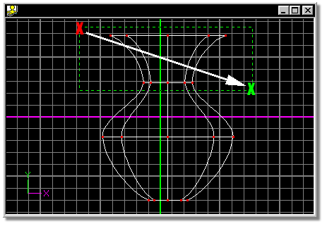
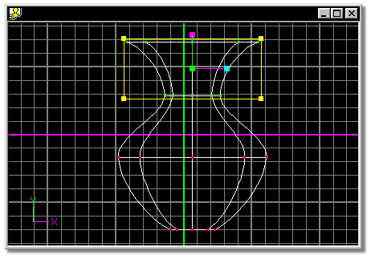

It is often necessary to manipulate more than a single control point at a
time. It is extremely useful to be able to specify these control points as
belonging in a group.
To work with a group, find a viewing angle and zoom which best isolates the
control points you are interested in, then click the Group button. Point in the
appropriate window near the corner of the targeted control points and press and
hold the mouse button. As you move, a bounding rectangle will drag behind the
mouse. Once the bounding box contains all of the targeted control points,
release the mouse button. The bounding rectangle will disappear and all the
bounded control points will turn green and become surround by a yellow manipulator
box.
When Group Mode is used in this way, any previously selected control points
are removed from the group.
After clicking the Group button, dragging a bounding box around control points
while holding down the <Shift> key will add the bound points to the current
group. Holding down the <Shift> key and clicking points individually will add or
remove them from the group.
The default keyboard shortcut key for Group Mode is G.
To group points, click the Group button on the Tool Panel, then point in the
appropriate window near the corner of the targeted control points (the red X).
Press and hold the mouse button while dragging the mouse in the direction of
the white arrow. Once the bounding box contains all of the targeted control
points (the green X), release the mouse button.

The resulting group:

Related Topics:


Peak
Smooth
Magnitude
Bias
Lasso Mode